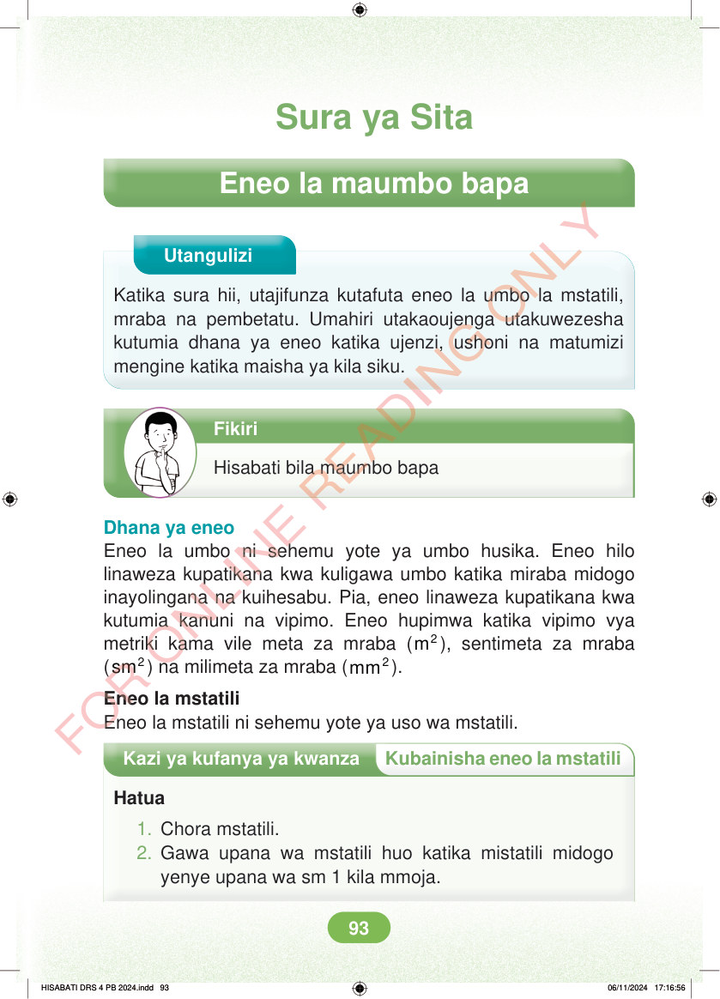

Sura ya Sita Eneo la maumbo bapa Utangulizi Katika sura hii, utajifunza kutafuta eneo la umbo la mstatili, mraba na pembetatu. Umahiri utakaoujenga utakuwezesha kutumia dhana ya eneo katika ujenzi, ushoni na matumizi mengine katika maisha ya kila siku. Fikiri Hisabati bila maumbo bapa Dhana ya eneo Eneo la umbo ni sehemu yote ya umbo husika. Eneo hilo linaweza kupatikana kwa kuligawa umbo katika miraba midogo inayolingana na kuihesabu. Pia, eneo linaweza kupatikana kwa kutumia kanuni na vipimo. Eneo hupimwa katika vipimo vya metriki kama vile meta za mraba ( 2 m ), sentimeta za mraba ( 2 sm ) na milimeta za mraba ( 2 mm ). Eneo la mstatili Eneo la mstatili ni sehemu yote ya uso wa mstatili. Kazi ya kufanya ya kwanza Kubainisha eneo la mstatili Hatua 1. Chora mstatili. 2. Gawa upana wa mstatili huo katika mistatili midogo yenye upana wa sm 1 kila mmoja. HISABATI DRS 4 PB 2024.indd 93 HISABATI DRS 4 PB 2024.indd 93 06/11/2024 17:16:56 06/11/2024 17:16:56